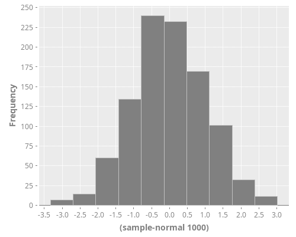
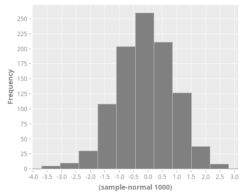
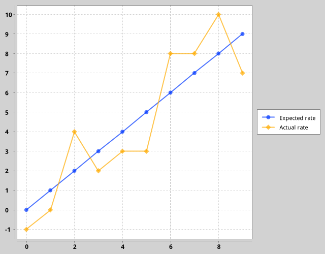

Clojure Plotting to Org inline image in ob-clojure
1 The Process of my Clojure Plotting
1.1 ask whether Clojure/JVM can change working directory
I did some hard search, found some links
- https://stackoverflow.com/questions/840190/changing-the-current-working-directory-in-java
- https://stackoverflow.com/questions/19008592/java-change-file-working-directory
Then I found JVM does not allow to change working directory because of security reason https://bugs.java.com/bugdatabase/view_bug.do?bug_id=4045688.
So, there is no reliable way to do this in pure Java. Setting the user.dir
property via System.setProperty() or java -Duser.dir=... does seem to affect
subsequent creations of Files, but not e.g. FileOutputStreams.
1.2 I create Org-mode library "ob-clojure-literate" and improve Org Babel "ob-core.el" for plotting support
Because changing Clojure/JVM working directory is not available, so I find
method on Emacs side, Org-mode other Babel lanaguages like R, Python have good
image file result support. So I dive into source code, and try to add similar
function to "ob-clojure". But I found some limites, then I created
"ob-clojure-literate (GitHub repo)" (Now it is in
Org-mode
contrib lib).
1.3 use more better solution by passing target path into Clojure with header argument :var
You can fake change Clojure REPL working directory by passing header argument variable into Clojure code. Like this:
#+begin_src clojure :results value :var dir=(concat (file-name-directory (buffer-file-name)) "data/images/") (str dir "ob-clojure-literate.png") #+end_src #+RESULTS[<2018-05-17 01:12:55> 73be0ca9a40a4f1e4fdee8e535991955f77b034a]: : "/home/stardiviner/Org/Wiki/Computer Technology/Programming/Emacs/Data/Emacs Packages/Org mode/data/images/ob-clojure-literate.png"
Then you can use Clojure funciton to save graphics object to target file with correct absolute path:
#+HEADERS: :var cwd=(concat (file-name-directory (buffer-file-name)) "data/images/") #+begin_src clojure :results graphics file link :dir "data/images" :file "ob-clojure-literate.png" (use '(incanter core stats datasets charts io pdf)) (def hist (histogram (sample-normal 1000))) (save hist (str cwd "ob-clojure-literate.png")) #+end_src
(use '(incanter core stats datasets charts io pdf)) (def hist (histogram (sample-normal 1000))) (save hist (str cwd "ob-clojure-literate.png"))

1.4 use final solution by move image file to target path with Clojure function
#+begin_src clojure :results graphics file link :dir "data/images" :file "ob-clojure-incanter-move.png" :var dir=(concat (file-name-directory (buffer-file-name)) "data/images/") (use '(incanter core stats datasets charts io pdf)) (import '(java.io File)) (def hist (histogram (sample-normal 1000))) (save hist "ob-clojure-incanter-move.png") (.renameTo (File. "ob-clojure-incanter-move.png") (File. (str dir "ob-clojure-incanter-move.png"))) #+end_src
(use '(incanter core stats datasets charts io pdf)) (import '(java.io File)) (def hist (histogram (sample-normal 1000))) (save hist "ob-clojure-incanter-move.png") (.renameTo (File. "ob-clojure-incanter-move.png") (File. (str dir "ob-clojure-incanter-move.png")))

2 Incanter
#+begin_src clojure :results graphics :dir "data/images" :file "ob-clojure-literate.png" :var dir=(concat (file-name-directory (buffer-file-name)) "data/images/") (use '(incanter core stats datasets charts io pdf)) (def hist (histogram (sample-normal 1000))) (save hist (str dir "ob-clojure-literate.png")) #+end_src
(use '(incanter core stats datasets charts io pdf)) (def hist (histogram (sample-normal 1000))) (save hist (str dir "ob-clojure-literate.png"))
3 clj-xchart
#+begin_src clojure :results graphics file link :dir "data/images" :file "ob-clojure-clj-xchart.png" :var dir=(concat (file-name-directory (buffer-file-name)) "data/images/") (require '[com.hypirion.clj-xchart :as xchart]) (def ob-clojure-clj-xchart (xchart/xy-chart {"Expected rate" [(range 10) (range 10)] "Actual rate" [(range 10) (map #(+ % (rand-int 5) -2) (range 10))]})) ;; (xchart/view ob-clojure-clj-xchart) (xchart/spit ob-clojure-clj-xchart (str dir "ob-clojure-clj-xchart.png")) #+end_src
(require '[com.hypirion.clj-xchart :as xchart]) (def ob-clojure-clj-xchart (xchart/xy-chart {"Expected rate" [(range 10) (range 10)] "Actual rate" [(range 10) (map #(+ % (rand-int 5) -2) (range 10))]})) ;; (xchart/view ob-clojure-clj-xchart) (xchart/spit ob-clojure-clj-xchart (str dir "ob-clojure-clj-xchart.png"))

4 ggplot2
5 jutsu
6 References
I also posted this method on Org Mode Worg documentations: https://orgmode.org/worg/org-contrib/babel/languages/ob-doc-clojure.html
7 Make use of CIDER new support of image content-type
Since the PR https://github.com/clojure-emacs/cider-nrepl/pull/517 got merged into CIDER. It is realsed in CIDER 0.17 (Andalucía).
CIDER in Emacs can handle various image content-types now and render image in the REPL.
I'm considering how to integrate this feature into ob-clojure.el to save image
content-type as file.
8 Literaral Org-mode version
If you want to see Literal Org-mode version of this post, click the "Show Org Source" button!